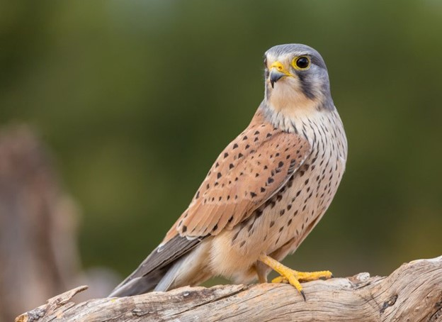

Issue 02 • March 2025
In this magazine, we take flight into the world of bird symbolism. War and peace are themes society cannot escape, making it essential to explore how the symbols of the dove, a universal emblem of peace; the falcon, representing strength and resilience; and the crow, often associated with death, have evolved over time. To capture their symbolic significance in modern society, we created images, conducted interviews, and analyzed the role of birds in the media.
Birds and their historical symbolic meanings continue to shape our perceptions. They are not only part of our natural world but also serve as mascots, subjects of photography, and even memes. Examining how these symbols have evolved helps us better understand their role in our culture.
Yet, birds are often overlooked. We wear headphones, drowning out their songs, and rarely stop to notice their presence. Still, their images and symbolism continue to communicate with us in ways we might not even realize. With this magazine, we aim to highlight the symbolic role of birds and invite readers to reflect on their significance. We hope you enjoy reading it.
Dans ce magazine, nous prenons notre envol dans le monde du symbolisme des oiseaux. La guerre et la paix sont des thèmes dont la société ne peut s'échapper, ce qui rend essentiel l’examen de l’évolution des symboles de la colombe, emblème universel de la paix ; du faucon, représentant la force et la résilience ; et du corbeau, souvent associé à la mort. Pour capturer leur signification symbolique dans la société moderne, nous avons créé des images, mené des interviews et analysé le rôle des oiseaux dans les médias.
Les oiseaux et leurs significations symboliques historiques continuent de façonner nos perceptions. Ils font non seulement partie de notre monde naturel, mais servent aussi de mascottes, de sujets de photographie et même de mèmes. Examiner l’évolution de ces symboles nous aide à mieux comprendre leur rôle dans notre culture.
Et pourtant, les oiseaux sont souvent négligés. Nous portons des écouteurs, couvrant leurs chants, et nous nous arrêtons rarement pour remarquer leur présence. Pourtant, leurs images et leur symbolisme continuent de nous parler d’une manière dont nous ne nous rendons même pas compte. Avec ce magazine, nous souhaitons mettre en lumière le rôle symbolique des oiseaux et inviter les lecteurs à réfléchir à leur signification. Nous espérons que vous apprécierez votre lecture.